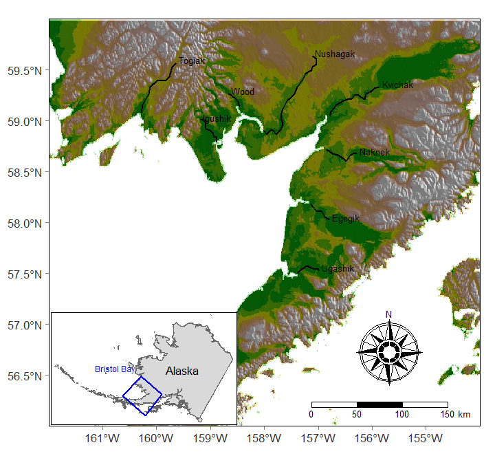

22 Lab 5 - Dynamic Linear Models
Teams
Liz Elmstrom (SAFS), Dylan Hubl (SEFS), Maria Kuruvilla (QERM)
Terrance Wang (SAFS), Zoe Rand (QERM)
Eric French (CEE), Madison Shipley (SAFS), Karl Veggerby (SAFS)
Nick Chambers (SAFS), Emma Timmins-Schiffman (Genome Sci), Miranda Mudge (Molecular & Cellular)
Background
For the lab this week we will use DLM’s to examine some of the time-varying properties of the spawner-recruit relationship for Pacific salmon. Much work has been done on this topic, particularly by Randall Peterman and his students and post-docs at Simon Fraser University. To do so, researchers commonly use a Ricker model because of its relatively simple form, such that the number of recruits (offspring) born in year \(t\) (\(R_t\)) from the number of spawners (parents) (\(S_t\)) is
\[\begin{equation} R_t = a S_t e^{-b S + v_t}. \end{equation}\]
The parameter \(a\) determines the maximum reproductive rate in the absence of any density-dependent effects (the slope of the curve at the origin), \(b\) is the strength of density dependence, and \(v_t \sim N(0,\sigma)\). In practice, the model is typically log-transformed so as to make it linear with respect to the predictor variable \(S_t\), such that
\[\begin{align} \text{log}(R_t) &= \text{log}(a) + \text{log}(S_t) -b S_t + v_t \\ \text{log}(R_t) - \text{log}(S_t) &= \text{log}(a) -b S_t + v_t \\ \text{log}(R_t/S_t) &= \text{log}(a) - b S_t + v_t. \end{align}\]
Substituting \(y_t = \text{log}(R_t/S_t)\), \(x_t = S_t\), and \(\alpha = \text{log}(a)\) yields a simple linear regression model with intercept \(\alpha\) and slope \(b\).
Unfortunately, however, residuals from this simple model typically show high-autocorrelation due to common environmental conditions that affect overlapping generations. Therefore, to correct for this and allow for an index of stock productivity that controls for any density-dependent effects, the model may be re-written as
\[\begin{align} \text{log}(R_t/S_t) &= \alpha_t - b S_t + v_t, \\ \alpha_t &= \alpha_{t-1} + w_t, \end{align}\]
and \(w_t \sim N(0,q)\). By treating the brood-year specific productivity as a random walk, we allow it to vary, but in an autocorrelated manner so that consecutive years are not independent from one another.
More recently, interest has grown in using covariates (\(e.g.\), sea-surface temperature) to explain the interannual variability in productivity. In that case, we can can write the model as
\[\begin{equation} \text{log}(R_t/S_t) = \alpha + \delta_t X_t - b S_t + v_t. \end{equation}\]
In this case we are estimating some base-level productivity (\(\alpha\)) plus the time-varying effect of some covariate \(X_t\) (\(\delta_t\)).
Spawner-recruit data
The data come from a large public database begun by Ransom Myers many years ago. If you are interested, you can find lots of time series of spawning-stock, recruitment, and harvest for a variety of fishes around the globe. The website is here.
For this exercise, we will use spawner-recruit data for sockeye salmon (Oncorhynchus nerka) from the Kvichak River in SW Alaska that span the years 1952-1989. In addition, we’ll examine the potential effects of the Pacific Decadal Oscillation (PDO) during the salmon’s first year in the ocean, which is widely believed to be a “bottleneck” to survival.
These data are in the atsalibrary package on GitHub. If needed, install using the devtools package.
Code
## library(devtools)
## Windows users will likely need to set this
## Sys.setenv("R_REMOTES_NO_ERRORS_FROM_WARNINGS" = "true")
devtools::install_github("nwfsc-timeseries/atsalibrary")Load the data.
Code
data(KvichakSockeye, package="atsalibrary")
SR_data <- KvichakSockeyeThe data are a dataframe with columns for brood year (brood_year), number of spawners (spawners), number of recruits (recruits) and PDO at year \(t-2\) in summer (pdo_summer_t2) and in winter (pdo_winter_t2).
Code
## head of data file
head(SR_data) brood_year spawners recruits pdo_summer_t2 pdo_winter_t2
1 1952 NA 20200 -2.79 -1.68
2 1953 NA 593 -1.20 -1.05
3 1954 NA 799 -1.85 -1.25
4 1955 NA 1500 -0.60 -0.68
5 1956 9440 39000 -0.50 -0.31
6 1957 2840 4090 -2.36 -1.78Resources
Lab materials from April 20 [online here]
Chapter 10 Dynamic Factor Analysis. ATSA Lab Book. [online here]